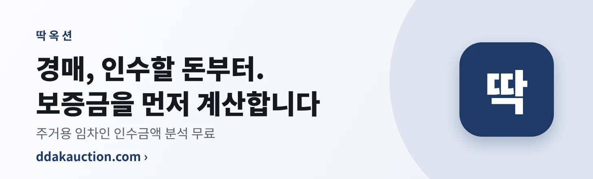

미네소타 팀버울브스 · NBA 팀 정보
통계 AI 계산 · 경기 결과만으로 만든 전력 지수와 최근 경기
한눈에 보기
미네소타 팀버울브스은(는) NBA 2026-2027 시즌 12승 6패, 전력 지수 1689점으로 30개 팀 중 4위입니다. 최근 5경기 평균 118.4점 득점, 102.0점 실점입니다.
최근 5경기(최신순) 승승승승승
앞으로 경기 승률
- 11/15(일) 10:00 홈 vs 시카고 불스 · 미네소타 팀버울브스 승 82% · 시카고 불스 승 18%
- 11/17(화) 10:00 홈 vs 포틀랜드 트레일블레이저스 · 미네소타 팀버울브스 승 61% · 포틀랜드 트레일블레이저스 승 39%
- 11/18(수) 10:00 홈 vs 포틀랜드 트레일블레이저스 · 미네소타 팀버울브스 승 61% · 포틀랜드 트레일블레이저스 승 39%
- 11/20(금) 10:00 홈 vs 뉴욕 닉스 · 미네소타 팀버울브스 승 66% · 뉴욕 닉스 승 34%
- 11/22(일) 10:00 홈 vs 멤피스 그리즐리스 · 미네소타 팀버울브스 승 73% · 멤피스 그리즐리스 승 27%
최근 10경기
| 날짜 | 구분 | 상대 | 스코어 | 결과 |
|---|---|---|---|---|
| 11/13 | 홈 | 댈러스 매버릭스 | 133-94 | 승 |
| 11/9 | 홈 | 유타 재즈 | 115-100 | 승 |
| 11/7 | 원정 | 뉴올리언스 펠리컨스 | 115-109 | 승 |
| 11/5 | 원정 | 휴스턴 로키츠 | 117-107 | 승 |
| 11/3 | 홈 | 밀워키 벅스 | 112-100 | 승 |
| 11/1 | 원정 | 샌안토니오 스퍼스 | 111-121 | 패 |
| 10/31 | 홈 | LA 클리퍼스 | 127-101 | 승 |
| 10/29 | 홈 | 골든스테이트 워리어스 | 114-119 | 패 |
| 10/27 | 원정 | 클리블랜드 캐벌리어스 | 125-127 | 패 |
| 10/26 | 홈 | 토론토 랩터스 | 117-94 | 승 |
통계 추정이며 결과를 보장하지 않습니다. 부상·결장은 반영하지 않습니다. 베팅을 권유하지 않습니다.
 광고
광고맞춤 보험 설계 상담혼자서 생활하실 땐 보험이 더 필요합니다. 필요할 때 연락 주세요. · 메리츠화재 보험설계사 심경화소속사 광고 승인 완료 · 설계사 등록번호 326015191
 광고
광고AI 쇼핑 준비도 무료 진단내 쇼핑몰, AI 쇼핑 에이전트에게 보일까요? 무료로 진단해 보세요.
 광고
광고5060 친구·모임 만남새로운 인연, 품격 있게 시작하세요. 카카오 로그인으로 무료 가입.
 광고
광고장례 절차 안내 가이드갑작스러운 일, 차근차근 안내해 드립니다.
 광고
광고AI 패독 영상 분석 리포트경주마의 움직임을 영상과 데이터로 읽습니다. 통계 정보 제공이며 추천·권유가 아닙니다.
 광고
광고AI 경주 통계·분석 서비스내 손안의 말박사. 통계 정보 제공이며 추천·권유가 아닙니다.

광고경매 인수 보증금 계산경매, 인수할 돈부터. 주거용 임차인 인수금액 분석을 무료로 확인하세요. 정보 제공이며 법률 자문·권유가 아닙니다.